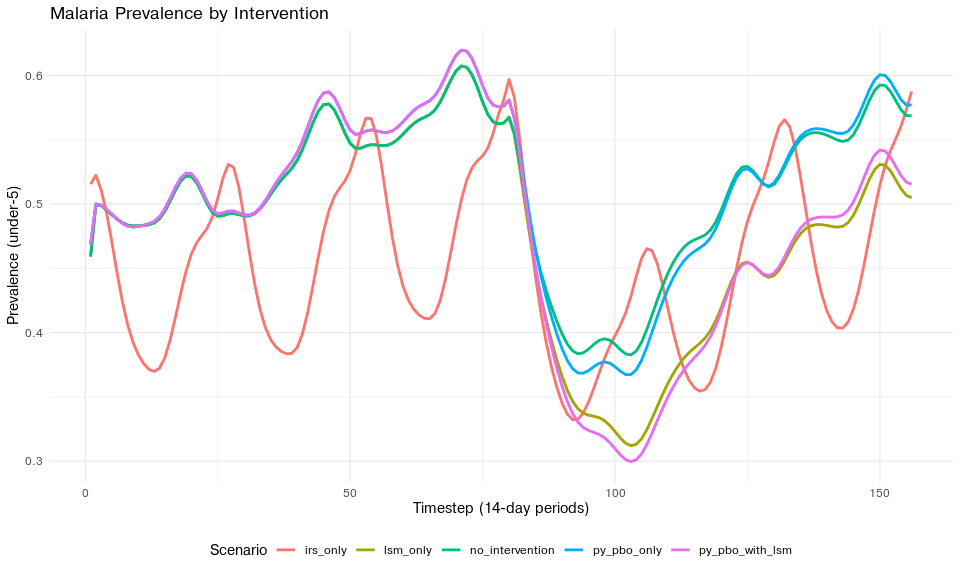
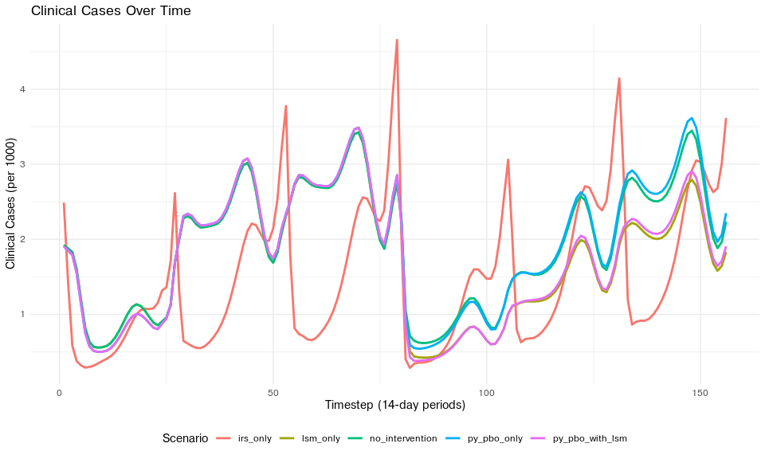

An R interface to the Python MINTe (Malaria Intervention Emulator) package. This package provides neural network-based malaria scenario predictions for evaluating intervention strategies including ITNs (Insecticide-Treated Nets), IRS (Indoor Residual Spraying), and LSM (Larval Source Management).
Features
- Fast Scenario Predictions: Run thousands of malaria intervention scenarios in seconds using pre-trained LSTM models
- Multiple Predictors: Predict both prevalence and clinical cases
- Flexible Net Types: Support for various ITN types (pyrethroid-only, PBO, pyrrole, PPF)
- Model Caching: Efficient caching of loaded models for faster subsequent runs
- Native R Plotting: Built-in ggplot2 visualization functions
- Web Interface Support: Lightweight controller for web application integration
Installation
Quick Start
Check Installation
library(rminte)
# Check if minte is available
minte_available()
#> [1] TRUERun a Single Scenario
results <- run_minter_scenarios(
scenario_tag = "example_scenario",
res_use = 0.2,
py_only = 0.3,
py_pbo = 0.2,
py_pyrrole = 0.1,
py_ppf = 0.05,
prev = 0.55,
Q0 = 0.92,
phi = 0.85,
season = 0,
irs = 0.4,
irs_future = 0.4,
lsm = 0.2,
routine = 1,
itn_future = 0.45,
net_type_future = "py_only"
)
# View results structure
print(results)
#> MINTer Results
#> ==============
#> Prevalence predictions: 156 rows
#> Cases predictions: 156 rows
#> Scenarios: 1
#> EIR valid: TRUE
# View prevalence predictions
head(results$prevalence)
#> index timestep prevalence model_type scenario scenario_tag
#> 1 0 1 0.5460292 LSTM example_scenario example_scenario
#> 2 0 2 0.5551797 LSTM example_scenario example_scenario
#> 3 0 3 0.5465740 LSTM example_scenario example_scenario
#> 4 0 4 0.5329600 LSTM example_scenario example_scenario
#> 5 0 5 0.5144324 LSTM example_scenario example_scenario
#> 6 0 6 0.4937894 LSTM example_scenario example_scenario
#> eir_valid
#> 1 TRUE
#> 2 TRUE
#> 3 TRUE
#> 4 TRUE
#> 5 TRUE
#> 6 TRUERunning Multiple Scenarios
# Define multiple scenarios
n_scenarios <- 5
results <- run_minter_scenarios(
scenario_tag = c("no_intervention", "irs_only", "lsm_only",
"py_pbo_only", "py_pbo_with_lsm"),
res_use = rep(0.2, n_scenarios),
py_only = c(0.3, 0.3, 0.3, 0.0, 0.0),
py_pbo = c(0.2, 0.2, 0.2, 0.5, 0.5),
py_pyrrole = rep(0.1, n_scenarios),
py_ppf = rep(0.05, n_scenarios),
prev = rep(0.55, n_scenarios),
Q0 = rep(0.92, n_scenarios),
phi = rep(0.85, n_scenarios),
season = rep(0, n_scenarios),
irs = c(0.0, 0.5, 0.0, 0.0, 0.0),
irs_future = c(0.0, 0.5, 0.0, 0.0, 0.0),
lsm = c(0.0, 0.0, 0.3, 0.0, 0.3),
routine = rep(1, n_scenarios)
)
# Analyze results
library(dplyr)
#>
#> Attaching package: 'dplyr'
#> The following object is masked from 'package:testthat':
#>
#> matches
#> The following objects are masked from 'package:stats':
#>
#> filter, lag
#> The following objects are masked from 'package:base':
#>
#> intersect, setdiff, setequal, union
results$prevalence %>%
group_by(scenario_tag) %>%
summarise(mean_prev = mean(prevalence)) %>%
arrange(mean_prev)
#> # A tibble: 5 × 2
#> scenario_tag mean_prev
#> <chr> <dbl>
#> 1 irs_only 0.456
#> 2 lsm_only 0.481
#> 3 py_pbo_with_lsm 0.483
#> 4 no_intervention 0.511
#> 5 py_pbo_only 0.513Visualization
library(ggplot2)
# Plot prevalence over time
p <- plot_prevalence(results, title = "Malaria Prevalence by Intervention")
print(p)
# Plot cases over time
p_cases <- plot_cases(results)
print(p_cases)
Utility Functions
# Calculate net effectiveness from resistance
result <- calculate_overall_dn0(
resistance_level = 0.3,
py_only = 0.4,
py_pbo = 0.3,
py_pyrrole = 0.2,
py_ppf = 0.1
)
cat("Overall dn0:", result$dn0, "\n")
#> Overall dn0: 0.4193867
cat("Total ITN use:", result$itn_use, "\n")
#> Total ITN use: 1
# Get available net types
net_types <- available_net_types()
print(net_types)
#> [1] "pyrethroid_only" "pyrethroid_pbo" "pyrethroid_ppf"
#> [4] "pyrethroid_pyrrole"API Reference
Main Functions
| Function | Description |
|---|---|
run_minter_scenarios() |
Main entry point for running intervention scenarios |
run_malaria_emulator() |
Direct emulator interface for scenario predictions |
run_mintweb_controller() |
Simplified web interface controller |
plot_prevalence() |
Plot prevalence over time (ggplot2) |
plot_cases() |
Plot cases over time (ggplot2) |
create_scenario_plots_mpl() |
Create visualizations from results (matplotlib) |
Utility Functions
| Function | Description |
|---|---|
calculate_overall_dn0() |
Calculate net effectiveness from resistance and coverage |
available_net_types() |
Get list of supported net types |
resistance_to_dn0() |
Convert resistance to net effectiveness |
preload_all_models() |
Pre-load models into cache |
clear_cache() |
Clear model cache |
create_scenarios() |
Helper to create scenarios DataFrame |
Setup Functions
| Function | Description |
|---|---|
minte_available() |
Check if minte Python package is available |
configure_minte() |
Configure Python environment before initialization |
install_minte() |
Install minte Python package (for manual env management) |
Output Structure
The run_minter_scenarios() function returns a list with:
prevalence: Data frame with columns:
index: Scenario indextimestep: Time index (14-day periods)prevalence: Under-5 prevalencemodel_type: Model used (e.g., “LSTM”)scenario/scenario_tag: Scenario identifiereir_valid: Whether EIR is within calibrated rangecases: Data frame with similar structure, containing clinical cases per 1000
scenario_meta: Per-scenario metadata
eir_valid: Overall EIR validity flag
benchmarks: Timing information (if
benchmark = TRUE)
Requirements
- R >= 4.0.0
- Python >= 3.8
- reticulate >= 1.41
- minte Python package
Optional: - ggplot2 (for native R plotting) - dplyr (for data manipulation examples)
Citation
If you use this package, please cite the original MINTe Python package: - MINTe-python
Related Projects
- MINTe-python - Original Python package
- estiMINT-python - EIR estimation package